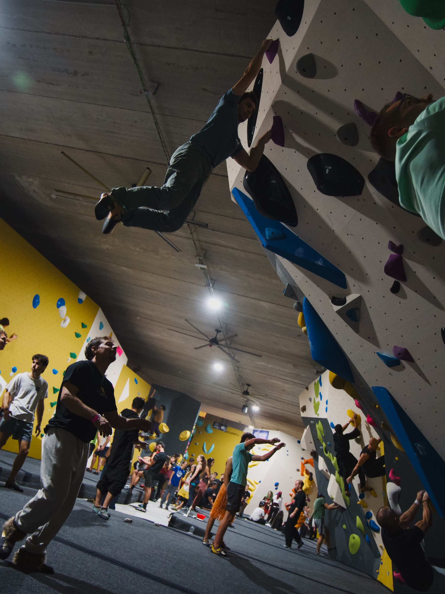
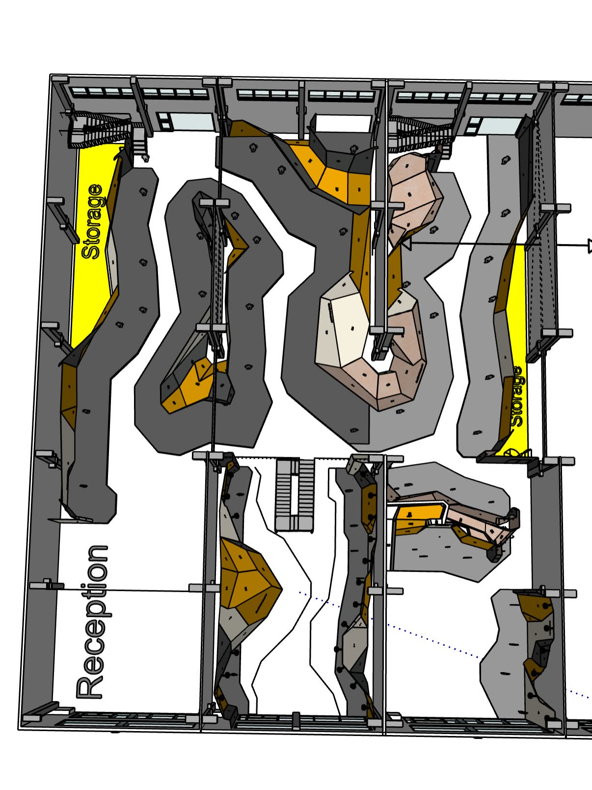
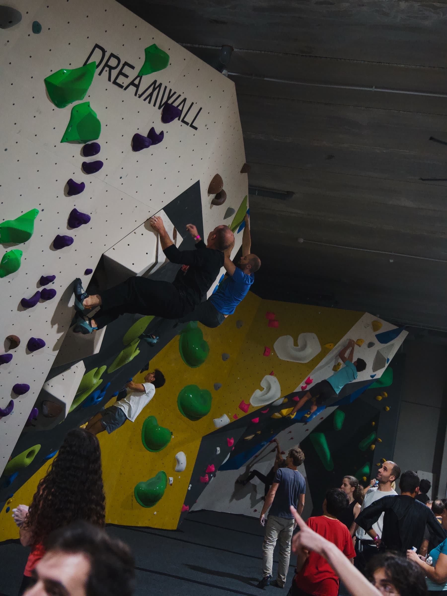
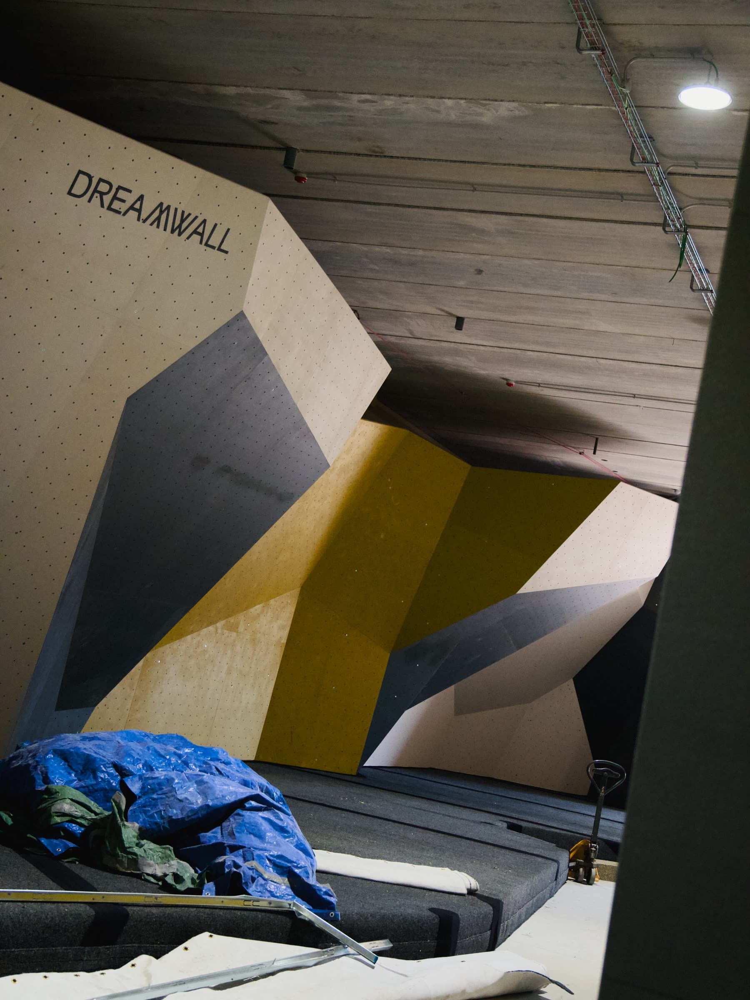

patiGran
Camí del Grau, 15 · Sant Fruitós de Bages
- Dilluns a divendres
- 8.00 – 22.30
- Dissabtes i diumenges
- 9.00 – 21.00
- Festius
- 10.00 – 14.00 · 16.00 – 21.00
Bloc, corda, zona d'entrenament, cafeteria i botiga. Obert cada dia.
Com arribarDos rocòdroms, una sola colla. Horaris, adreces i com arribar.
La quota mensual multicentre et deixa escalar als dos.
Camí del Grau, 15 · Sant Fruitós de Bages
Bloc, corda, zona d'entrenament, cafeteria i botiga. Obert cada dia.
Com arribar
Passatge de la Mercè, 4 · Manresa
El pati de sempre, al centre de Manresa. El cap de setmana, socis al patiGran sense cost.
Com arribarLes instal·lacions tanquen mitja hora abans que la cafeteria. 25 de desembre i 1 de gener, tancat. En dates especials, mira els horaris a Instagram.
Així vam anunciar les obres a l'estiu: un projecte ambiciós i llarg, una proposta arriscada. Creure en el creixement, reforçar els punts febles i posar la cirereta al pastís.



Primer cop? Omple el registre en línia abans de venir i, au, a escalar.
935 480 718